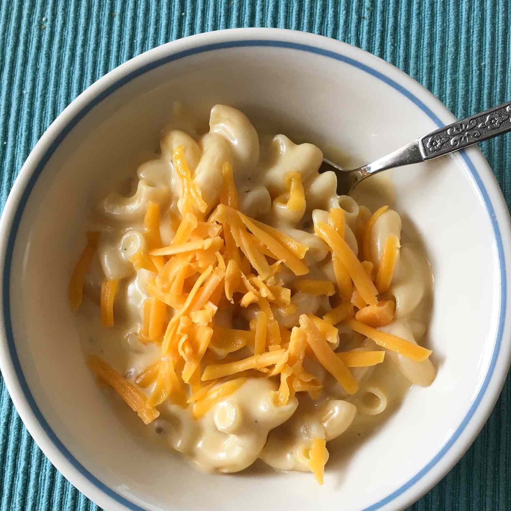

Home
Mac And Cheese

Description
Mac and cheese for one is quick and easy to prepare.
Once you try this homemade mac and cheese, you'll never want the boxed stuff again.
I cook mine in a soup crock.
Ingredients
- 3 tablespoons uncooked macaroni pasta
- 1 tablespoon butter
- 1/2 cup milk
- a tablespoon all-purpose flour
- 1/4 teaspoon salt
- 1/8 teaspoon onion powder
- 1 pinch peper
- 1/3 cup shredded Cheddar cheese
- 1/8 teaspoon ground mustard
- 1 dash Worcestershire sauce
- 1 dash hot sauce
- 1 teaspoon bread crumbs
- 1 tablespoon shredded Cheddar cheese
Steps
- Preheat the oven to 200 degrees C.
Grease an oven-proof soup crock or 1-cup baking dish.
- Bring a small pot of lightly salted water to a boil.
Cook macaroni in the boiling water, stirring occasionally, until tender yet firm to the bite, about 8 minutes.
Drain and set aside.
- Melt butter in the same pot over medium-high heat.
Whisk in milk, flour, salt, onion powder, and pepper until smooth.
- Cook and stir for 2 minutes.
Reduce the heat to low, then whisk in 1/3 cup Cheddar, mustard, Worcestershire sauce, and hot sauce.
- Stir in cooked macaroni until coated, then transfer to the prepared dish.
Sprinkle with bread crumbs and 1 tablespoon Cheddar.
- Bake, uncovered, in the preheated oven until macaroni is heated through and cheese is melted, about 10 minutes.
- Serve hot and enjoy!